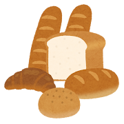
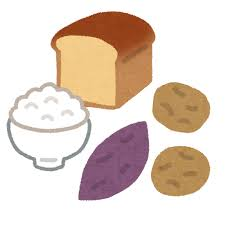
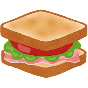
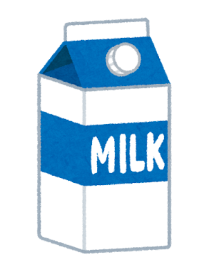

⚠️ 傳統早餐的失衡悲劇
- 典型比例：碳水 65%、脂肪 30%、蛋白質 <5%。
- 滿滿油蔥抓餅加奶茶，看似飽足，實質全為高空熱量與精緻澱粉。
- 缺乏足夠蛋白質（<10g），胃排空極快，容易在上午 10 點引發飢餓感。

💤 食物昏迷（Food Coma）真相
- 血糖過山車：空腹吃進大量精緻澱粉（白吐司/鐵板麵），血糖瞬間飆升。
- 反應性低血糖：胰島素超量分泌，隨後血糖雪崩式暴跌。
- 生理後果：大腦色胺酸轉換為褪黑激素前驅物，上午 10:30 陷入劇烈嗜睡與腦霧。

🎯 本簡報核心破局任務
- 學會Atwater熱量係數，一眼識破外食隱形油脂。
- 掌握「紅綠燈選餐法」，5 秒快速決策點餐。
- 實踐「500大卡黃金早餐公式」，保證蛋白質 $\ge 20\text{g}$，越吃越苗條！
🔥 蛋白質達標 20g+
告別嗜睡，提升飽足感達 4~5 小時

🍞 碳水化合物 (Carbs)
1 公克 = 4 大卡 (kcal)
- 生理角色：大腦神經與肌肉活動的首要能量燃料。
- 精緻高 GI（白吐司、油麵）：吸收極快引發血糖劇烈震盪與晨間嗜睡。
- 複合低 GI（地瓜、全麥）：富含膳食纖維，分解平緩持久穩定。

🥩 蛋白質 (Protein)
1 公克 = 4 大卡 (kcal)
- 生理角色：修復肌肉、合成免疫抗體與消化酵素。
- 產熱效應 (TEF) 高達 20%~30%：人體消化蛋白質本身就在燃燒卡路里！
- 早餐黃金標準：單餐建議攝取 20 ~ 25g，維持 4~5 小時飽足。

🥑 脂質 (Lipids / Fat)
1 公克 = 9 大卡 (kcal)
- 熱量密度是前兩者的 2.25 倍！
- 早餐店只要多淋一匙油或抹一層沙拉醬，熱量直接爆衝 100~200 大卡。
- 危險脂肪：奶精棕櫚油、起酥油、人造奶油，易引發慢性發炎。

🔴 黑胡椒鐵板麵加蛋
熱量 650~750 kcal
碳水 88g
鈉 1800~2200mg
- 碳水等同 1.3 碗白飯，引發嚴重反應性低血糖。
- 鈉含量直接逼近每日全天建議上限 (2400mg)，下肢水腫元凶。
- 麵條預拌油 + 鐵板淋油翻炒，極度油膩。

🔴 燒餅油條
熱量 500~550 kcal
吸油率 40%~50%
- 油條經高溫反覆油炸，孔隙吸飽高溫氧化油脂。
- 燒餅麵團包入油酥（麵粉+沙拉油/豬油）烘烤。
- 拯救改裝點法：油條換蔥蛋，熱量現降至 320 kcal！

🔴 培根蛋餅（假高蛋白）
熱量 390~420 kcal
脂肪 22g (佔比>50%)
- 培根在營養學分類屬於「油脂類」，非優質瘦肉！
- 熱量 80%~90% 來自飽和脂肪，蛋白質極少（僅 3g/片）。
- 加工醃製添加防腐亞硝酸鹽，高溫煎烤產生亞硝胺。
🍶 台式美乃滋（透明白沙拉醬）
早餐店老闆最習慣順手塗抹的「油脂隱形殺手」
- 成份真面目：大豆沙拉油佔比高達 65% ~ 75%！
- 熱量換算：一湯匙（15g）約 105 kcal；吐司雙面一抹（20~30g），直接灌入 150 ~ 200 大卡純油脂。
- 救命點餐咒語：
「老闆，吐司/漢堡完全不要抹沙拉醬（美乃滋）！」✨ 只要這句話，早餐熱量立省 150 大卡！
💡 原理：美乃滋是沙拉油加蛋黃乳化而成，外表透明香甜，實質就是濃縮大豆油！
🥤 早餐店大冰奶（500ml）
熱量 280 ~ 350 kcal ｜ 含糖 35 ~ 45g (7~9顆方糖)


致瀉三重生理刺激機制：
- 奶精棕櫚油：無鮮奶成分，空腹攝取高濃縮油脂促使膽囊收縮與胃結腸反射，腸道蠕動暴增。
- 炒決明子紅茶：古早味紅茶必加決明子，具中醫潤腸通便滑腸之效。
- 清晨冰塊生菌數：冷刺激加上細菌內毒素誘發腸道痙攣。
✅ 替換神招：改點「無糖高纖豆漿」或「美式黑咖啡」，熱量少一半，蛋白質多 15g！

🟢 綠燈區（天天吃）
原型食物・高蛋白・低吸油・無精緻糖
- 豬里肌蛋吐司（去美乃滋）：
310 kcal / 蛋白質 19g - 無糖高纖豆漿 (500ml)：
150 kcal / 蛋白質 15~18g - 超商地瓜 + 茶葉蛋 2 顆

🟡 黃燈區（改裝吃）
營養尚可・伴隨油脂・每週 2~3 次
- 原味蛋餅：260 kcal / 蛋白質 10g
- 起司蛋餅、蔬菜鮪魚蛋餅。
- 改裝救命動作：
1. 煎台少油乾烙
2. 醬油膏另外放
3. 加點一顆蛋補足蛋白

🔴 紅燈區（盡量避開）
高熱量・高鈉・高糖・極低蛋白質
- 黑胡椒鐵板麵加蛋（680 kcal）
- 燒餅油條（520 kcal）
- 培根/小熱狗蛋餅（390 kcal）
- 大冰奶 / 古早味含糖紅茶
- 頻率限制：每週至多 1 次或果斷放棄。
📐 500 大卡黃金早餐公式
複合低GI碳水 (40%) + 優質蛋白質 ≥ 20g (30%) + 良質脂肪 (30%) + 無糖高纖飲品
🌟 實戰爆款：西式早餐神級組合
- 豬排里肌蛋吐司（去美乃滋、換全麥麵包）
→ 約 310 kcal，蛋白質 19g - 無糖高纖豆漿中杯（350ml）
→ 約 110 kcal，蛋白質 10g - 合計數值：420 kcal / 蛋白質 29g（完美達標！）



🗣️ 外食族現場三大「救命點餐咒語」
-
咒語 1：去抹醬
「老闆，吐司/漢堡完全不要抹沙拉醬！」
👉 物理阻斷大豆油，現省 150 kcal 純油脂。 -
咒語 2：少油乾烙
「老闆，蛋餅少油乾烙，醬油膏分開裝！」
👉 吸油率砍半，大幅減少 400mg 鈉攝取告別水腫。 -
咒語 3：換無糖飲
「大冰奶換無糖高纖豆漿或美式黑咖啡！」
👉 砍掉 35g 精緻糖，多賺 15g 優質完全蛋白質。
📅 週一：西式高蛋白
豬排蛋吐司
(去美乃滋、換全麥)
+ 無糖豆漿中杯
420卡 / 蛋白 29g
📅 週二：蛋餅控油組
原味蛋餅
(煎台少油乾煎)
+ 荷包蛋 + 黑咖啡
340卡 / 蛋白 17g
📅 週三：傳統中式組
燒餅夾蔥蛋
(堅決去油條！)
+ 大碗清漿 (無糖)
450卡 / 蛋白 25g
📅 週四：超商極速組
全家/7-11 烤地瓜小
(約 110g 低 GI 碳水)
+ 茶葉蛋2顆 + 黑豆漿
420卡 / 蛋白 27g
📅 週五：迎接週末組
鮪魚蔬菜蛋餅
(醬油膏分開放)
+ 無糖鮮奶茶 (紅茶拿鐵)
460卡 / 蛋白 24g

💡 外食不是原罪，選錯才是陷阱！
明天早晨走進早餐店，大聲說出：「去美乃滋、換無糖豆漿」，開啟充滿活力的神清氣爽早晨！
1 / 8